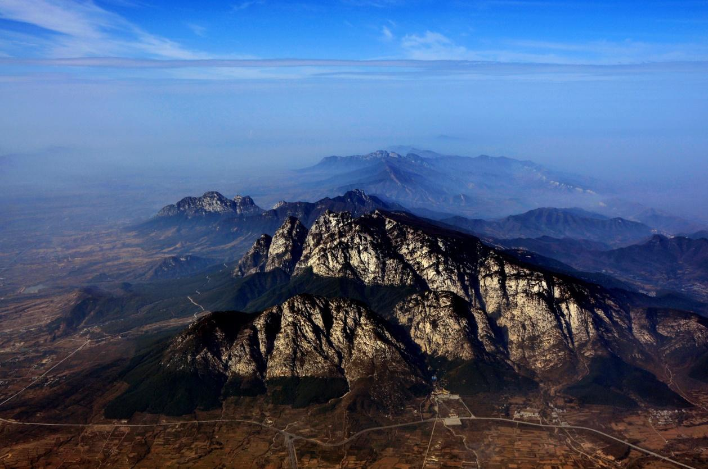
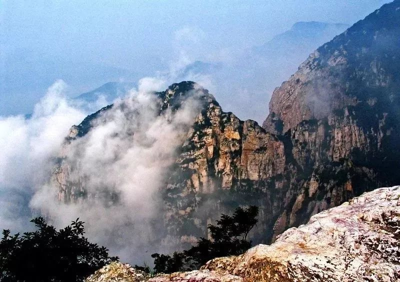
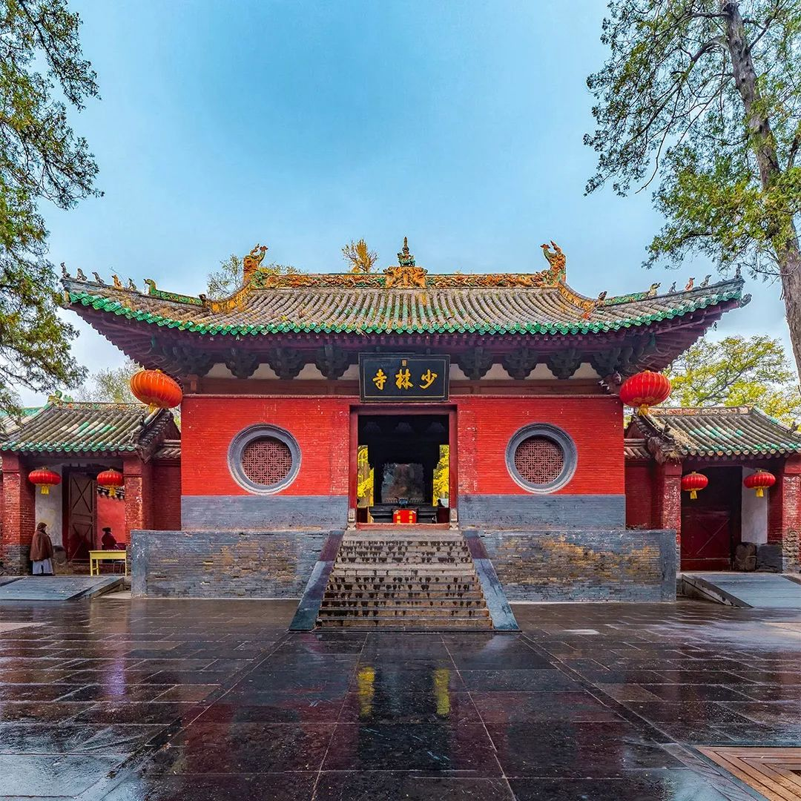
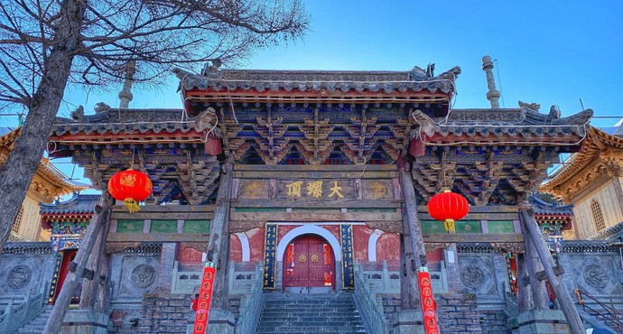
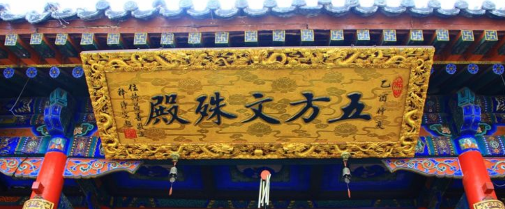
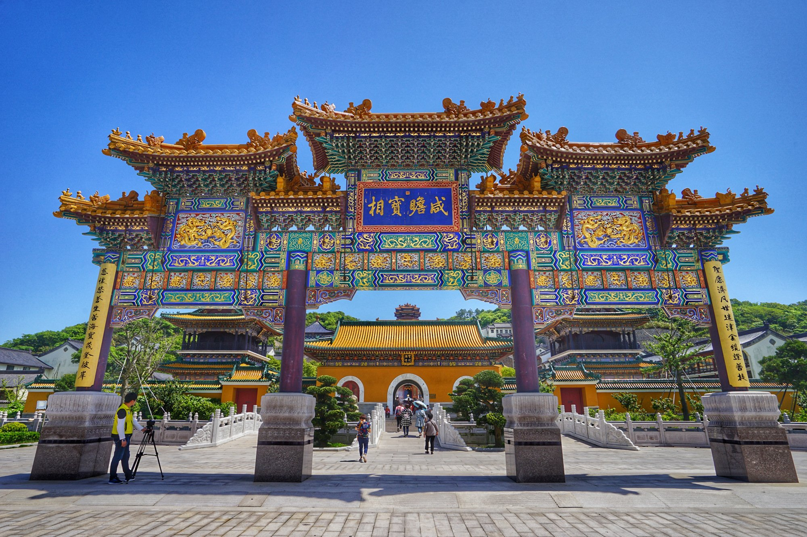
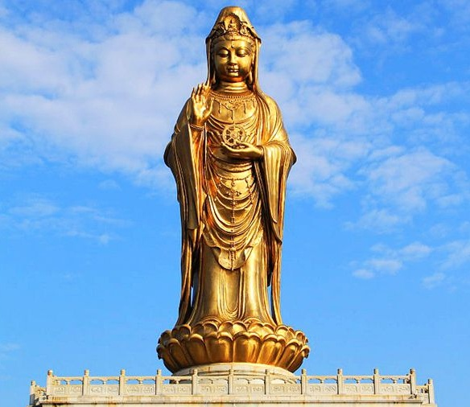
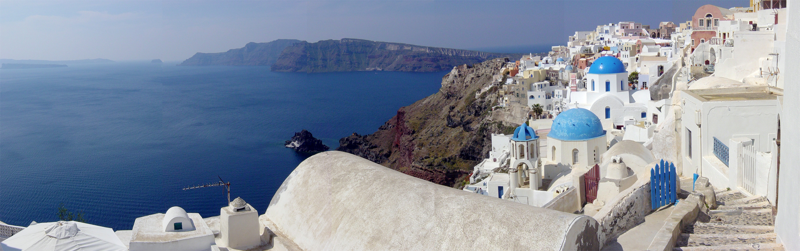

Jump to Content
Home
FootPrint
Hunt
Contact
Foot Print
In this page I will display some of tourist spots I have ever been.
Mount Song
Mountain Song is where Shaolin Temple is located.

 
Mount Wutai
Mountain Wutai is regarded as the home of Mañjuśrī, the Bodhisattva of wisdom.
 
Mount Putuo
Mountain Putuo is the awakening position of bodhisattva Guanyin.
 
Santorini Island
Santorini island is famous for the incredible sunset
